목표마다 마음에 드는 도트 스티커를 골라요. 오늘은 어떤 걸 붙일지 고르는 것부터 즐거워요.
오늘 해낸 일에
스티커 한 장
자기 전 책 열 쪽, 저녁 산책, 물 한 잔. 해낸 날 빈칸을 톡 누르면 스티커가 붙고, 판이 차곡차곡 채워져요.
iPhone과 Apple Watch에서 써요하나씩 채워 가는 재미
칭찬 스티커 모으듯, 해낸 만큼 판이 채워져요.
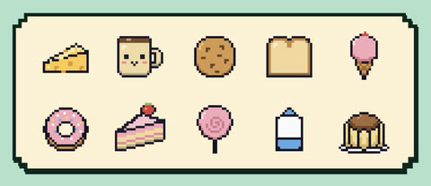
고르는 재미목표마다 마음에 드는 도트 스티커를 골라요. 오늘은 어떤 걸 붙일지 고르는 것부터 즐거워요.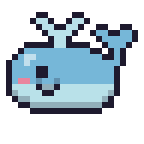
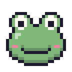
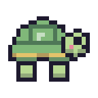
78910붙이는 재미빈칸을 한 번 톡. 한 칸씩 붙을 때마다 판이 채워지는 게 눈에 보여요.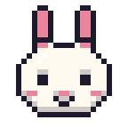
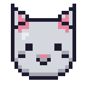
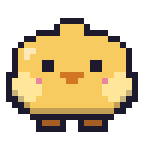
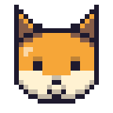
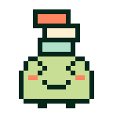
완성하는 재미마지막 칸까지 채운 판을 다시 보면 뿌듯해요. 판을 채울 때마다 차곡이도 표정으로 반응해요.
판 하나가 채워지기까지
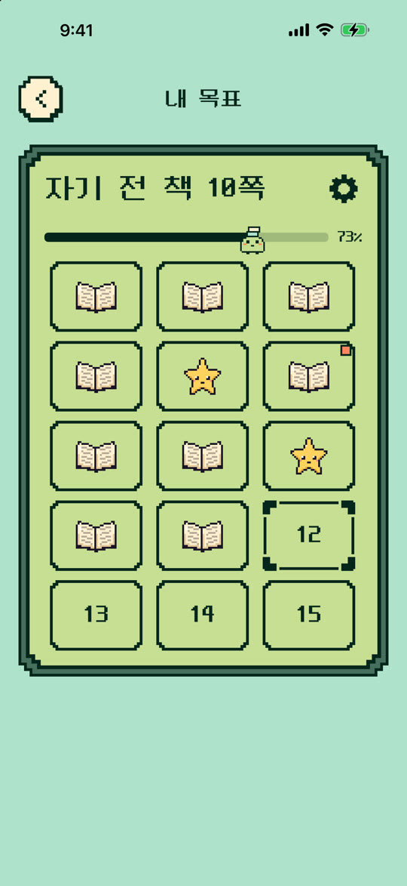
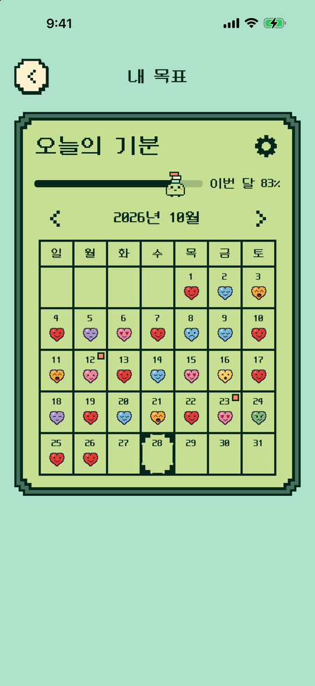
- 1목표를 하나 정해요이름을 짓고 스티커를 골라요. 달력판은 끝나는 날을 정할 수도 있어요.
- 2해낸 날 톡 붙여요잘못 붙였다면 꾹 눌러 떼요. 지난 날짜도 나중에 채울 수 있어요.
- 3쌓인 판을 다시 봐요다 채운 판도 계속하기로 이어 갈 수 있어요.
사진 한 장, 메모 한 줄
붙인 스티커를 누르면 그날 사진과 짧은 메모를 남길 수 있어요. 스티커만 붙여도 충분한 기록이에요. 앱에서 찍은 사진은 휴대폰 앨범에 쌓이지 않아요.
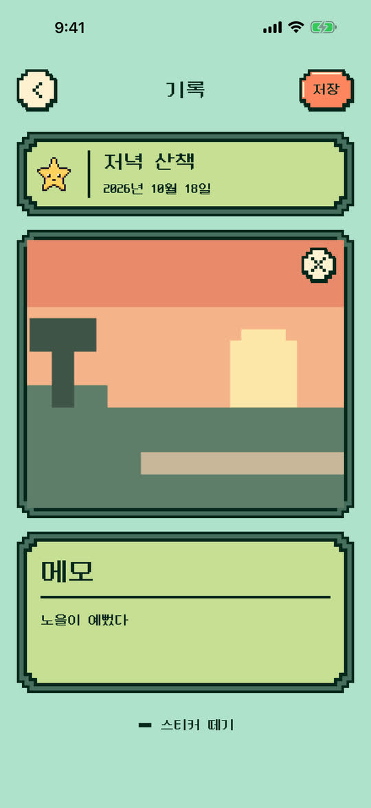
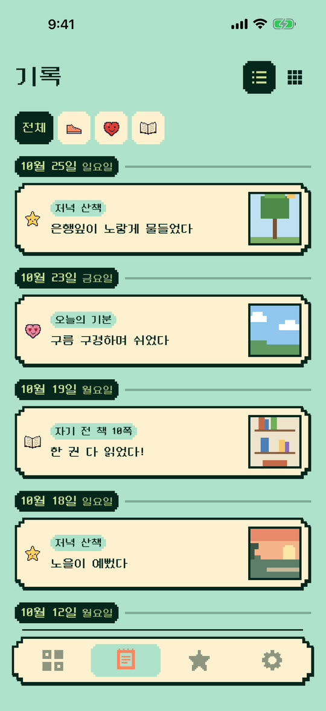
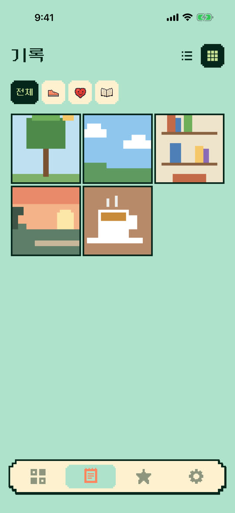
남긴 기록은 기록 탭에 날짜별로 모여요. 목표별로 골라 보고, 타임라인과 사진 피드로 바꿔 볼 수 있어요. 완성한 판의 기록도 함께 보여요.
손목에서도, 홈 화면에서도
운동 끝난 그 자리에서 Apple Watch로 붙여요. 붙일 때마다 차곡이 머리 위에 블록이 쌓이고, 세 개가 모이면 보관함에 넣어요.
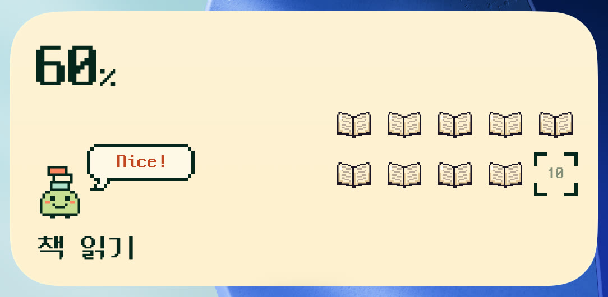
앱을 열지 않아도 홈 화면 위젯에서 빈칸을 누르면 바로 붙어요. 목표 하나, 적립판, 이번 달 세 가지 위젯 중에 고르고, 바탕색도 골라요.
친구와 함께 채워요
초대 링크를 보내면 친구가 같은 목표에 들어와요. 나를 포함해 6명까지 함께해요.
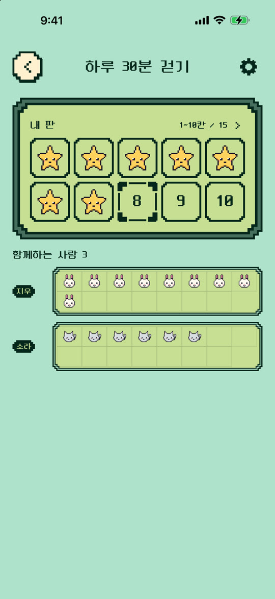
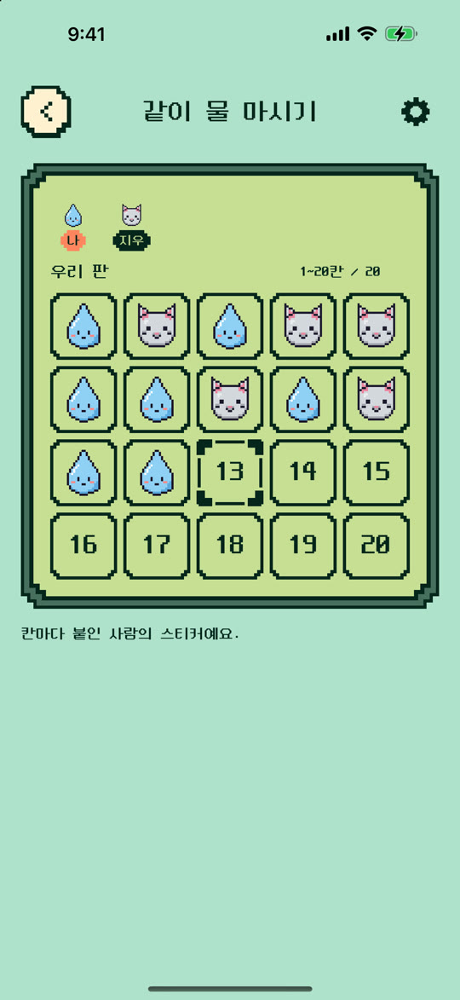
순위나 %로 비교하지 않아요. 사진과 메모는 나만 봐요. 친구와 함께하려면 로그인이 필요해요.
한 칸씩 찍은 도트 스티커로 꾸며요
물 2리터 마시기자기 전 책 10쪽헬스장 가기영어 단어 20개일기 한 줄만 보 걷기스트레칭 10분12시 전에 자기
무엇이든 판이 될 수 있어요. 작게 정할수록 자주 붙이고, 자주 붙일수록 즐거워요.
내 기록은 내 것으로
- 바로 시작로그인 없이 바로 기록설치하고 바로 써요. 혼자 채우는 목표는 로그인 없이 쓰고, 기록은 먼저 내 휴대폰에 저장돼요. 친구와 함께하려면 로그인이 필요해요.
- 자동 백업원할 때만 계정 연결Apple, 카카오, Google 중 하나로 로그인해 두면 붙이고 고칠 때마다 알아서 백업돼요. 새 휴대폰에서도 그대로 돌아와요.
- 함께 목표친구와 함께해도 사진과 메모는 나만 봐요친구에게는 이름과 스티커, 판에 붙은 칸만 보여요.
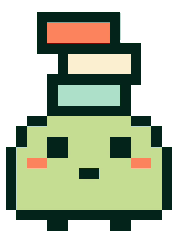
오늘 해낸 일,
첫 스티커로 남겨 볼까요?
무료로 받을 수 있어요
일부 스티커 묶음과 구독은 앱에서 살 수 있어요.
궁금한 점은 고객 지원에 물어봐 주세요.